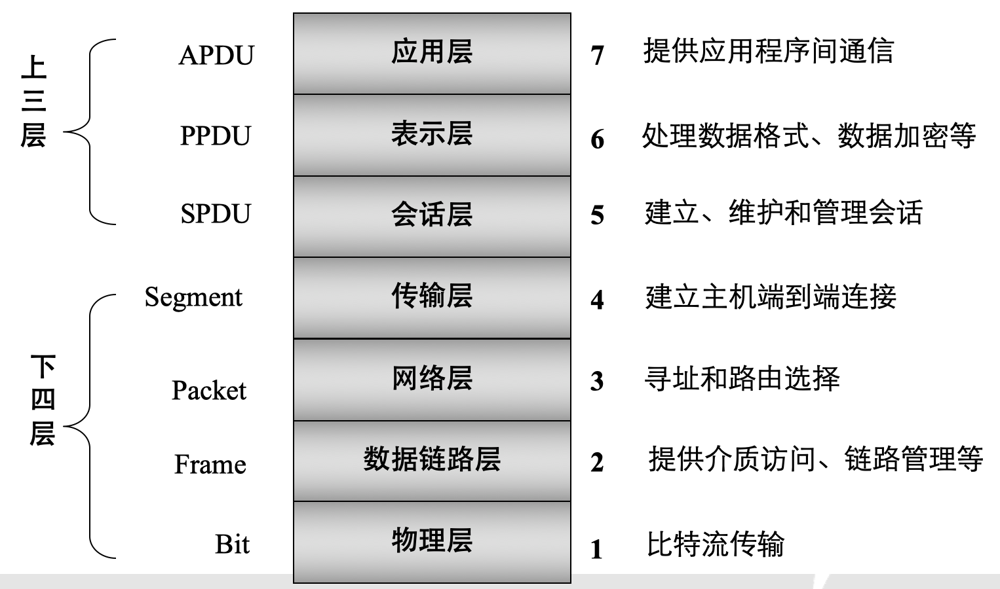
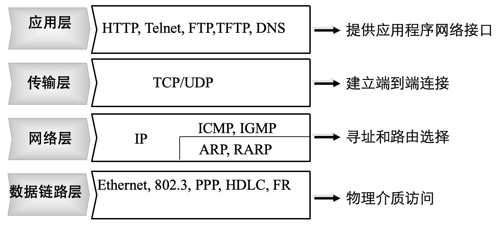
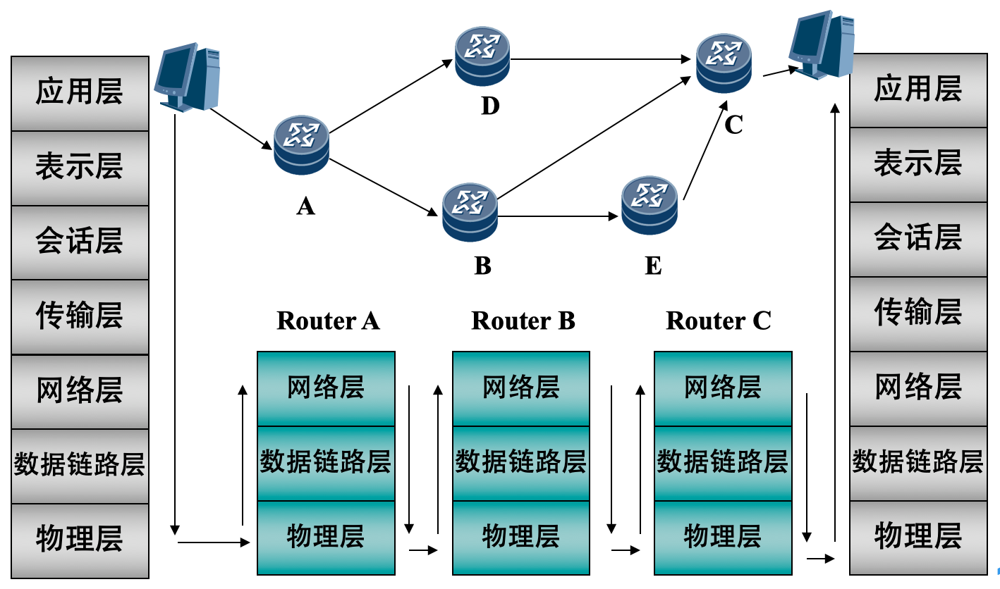
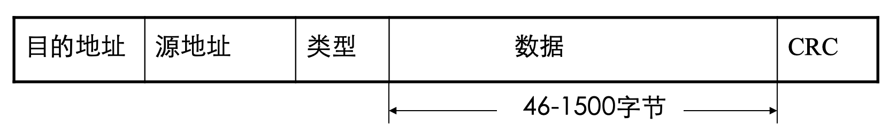
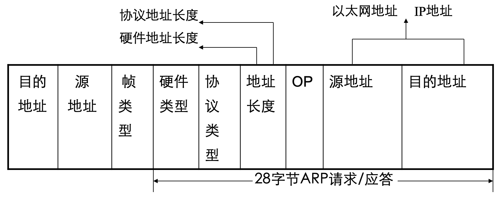
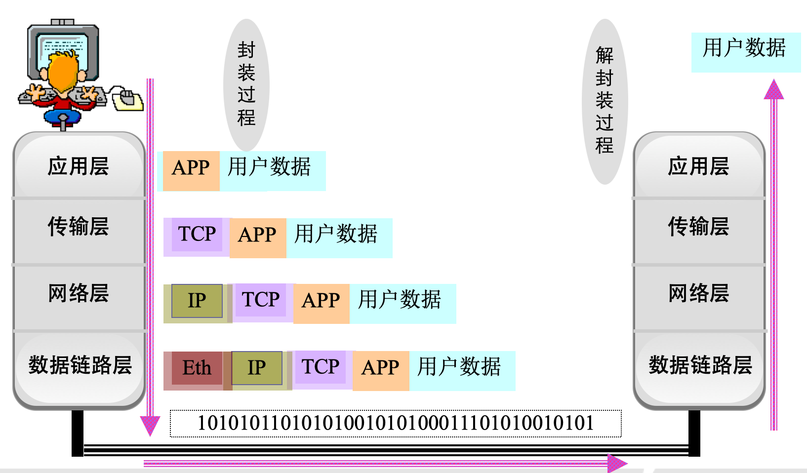
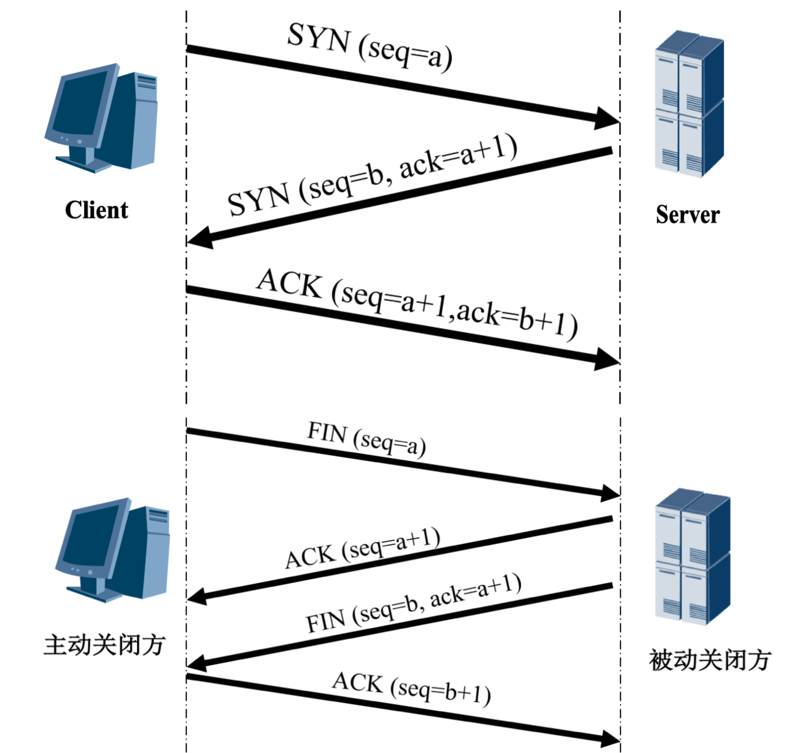

网络模型#
1. OSI 模型#
1.1. 简介#
OSI 模型：开放式通信系统互联参考模型（Open Systems Interconnection Reference Model, OSI/RM），是国际标准化组织（ISO）提出的一个试图使各种计算机在世界范围内互连为网络的标准框架。
OSI 模型将网络结构抽象为 7 层：
应用层
表示层
会话层
传输层
网络层
链路层
物理层

1.2. TCP/IP 协议族#
TCP/IP 协议：互联网协议包含了上百种协议标准，但，最重要的两个协议是 TCP 和 IP 协议，故，大家把互联网的协议简称 TCP/IP 协议；
TCP/IP 模型：将 OSI 模型简化为四层；

1.3. 协议#

协议 |
层级 |
|
|---|---|---|
DNS |
域名系统 |
应用层 |
DHCP |
动态主机配置协议 |
应用层 |
FTP |
文件转移协议 |
应用层 |
HTTP |
超文本转移协议 |
应用层 |
TFTP |
简单文件转移协议 |
应用层 |
SMTP |
简单邮件转移协议 |
应用层 |
TCP |
传输控制协议 |
传输层 |
UDP |
用户数据报协议 |
传输层 |
IP |
因特网协议 |
网络层 |
ICMP |
因特网控制消息协议 |
网络层 |
IGMP |
因特网组管理协议 |
网络层 |
ARP |
地址解析协议 |
网络层 |
RARP |
反向地址解析协议 |
网络层 |
应用层：应用程序可自建协议；
传输层：必须通过 IP 才能和链路层进行通信；
网络层：ICMP 和 IGMP 必须通过 IP 才能和链路层通信，ICMP 可直接与应用层通信，ARP 和 RARP 只与链路层通信的协议；
1.3.1. 链路层#

类型 |
协议 |
|---|---|
0800 |
IP |
0806 |
ARP |
8035 |
RARP |

1.3.2. 网络层和传输层#

2. 网络地址#
2.1. IPv4#
IPv4 地址（逻辑地址）: 用于在网络中标记一台电脑的一串数字，在本地局域网上是惟一的；
IPv4 地址均由 4 个 4 字节，即 32 个二进制数组成，每类 IPv4 地址的最小值用于显示网络区段，最大值用于广播，这两个值往往不会进行分配
A 类 IPv4 地址中的127.0.0.1 – 127.255.255.255用于回路测试；
127.0.0.1可代表本机 IPv4 地址，用
http://127.0.0.1就可测试本机中配置的 Web 服务器；
类别 |
网络地址占用字节 |
主机地址占用字节 |
IP 地址范围 |
可用网络个数 |
每个网络能容纳主机 |
|---|---|---|---|---|---|
A |
1 |
3 |
1.0.0.1 - 126.255.255.254 |
126 |
1677214 |
B |
2 |
2 |
128.1.0.1 - 191.255.255.254 |
16384 |
65534 |
C |
3 |
1 |
192.0.1.1 - 223.255.255.254 |
2097152 |
254 |
D |
不指向特定的网络 |
224.0.0.1 - 239.255.255.254 |
|||
只被用于多点广播 |
|||||
E |
仅作实验和开发用 |
2.2. 私有 IP#
私有 IP：国际规定有一部分 IPv4 地址是用于我们的局域网使用，不在公网中使用的 IP 地址；
类别 |
起始 IP 段 |
终止 IP 段 |
|---|---|---|
A |
10.0.0.0 |
10.255.255.255 |
B |
172.16.0.0 |
172.31.255.255 |
C |
192.168.0.0 |
192.168.255.255 |
2.3. 子网掩码#
子网掩码不能单独存在，它必须结合 IP 地址一起使用。子网掩码只有一个作用，就是将某个 IP 地址划分成网络地址和主机地址，只有通过子网掩码，才能表明一台主机所在的子网与其他子网的关系，使网络正常工作。
与 IP 地址相同，子网掩码的长度亦为 32 位，左边是网络位，用二进制数字 1 表示，右边是主机位，用二进制数字 0 表示。子网掩码与 IPv4 地址进行按位与操作，可得到 IPv4 地址所在的网络段（末位为 0）
若一个网络的规模不超过 254 台电脑，使用 255.255.255.0 作为子网掩码就可了，若在一所大学具有 1500 多台电脑，这种规模的局域网可使用 255.255.0.0；
2.4. MAC 地址#
MAC 地址（硬件地址）：由 6 个字节组成，前 3 个表示网卡许可，后 3 个是网卡产品序列号；
ping 命令会先调用 ARP（包含目标 IP 地址），通过交换机将 ARP 广播发送给其连接的所有设备，然后返回网关的 MAC 地址，然后请求方 PC 调用 ICMP 向目的 PC 发送消息；
当 MAC 地址为十六进制，则会发送给 ARP，反之会发送给 IP；
# 设置 IP 和掩码
ifconfig eth0 192.168.5.40
netmask 255.255.255.0
# 设置网关
route add default gw 192.168.5.1
# 查看域名解析的 IPv4 地址
nslookup baidu.com
3. Socket#
3.1. 创建、修改#
Socket（套接字）是进程间通信的一种方式，它能实现不同主机间的进程间通信，用于解决传输层以下的通信；
Socket = IP address + Protocol + Port
创建：socket.socket(AddressFamily, Type)
AddressFamily
AF_INET：用于网络进程间通信AF_UNIX：用于同台机器进程间通信
Type
SOCK_STREAM：流式套接字，主要用于 TCPSOCK_DGRAM：数据包套接字，主要用于 UDP
修改设置：setsockopt(SOL_SOCKET, Type)
Type
SO_BROADCAST：主要用于 UDP 广播SO_REUSEADDR：主要用于 TCP 服务器
3.2. 端口#
计算机通过 IP + 端口号区分不同网络服务。
端口号只有整数，范围是从 0 到 65535，Linux 共拥有 65536 (\(2^{16}\)) 个端口
端口号不是随意使用的，而是按照一定的规定进行分配
知名端口：端口号为 0-1023 的端口，如端口 80 分配给 HTTP 服务，端口 21 分配给 FTP 服务
动态端口：端口号为 1023-65535 的端口，动态分配给相应服务
查看端口状态：netstat –an
Protocol |
Port |
Socket |
|---|---|---|
HTTP |
80 |
TCP |
FTP |
20/21 |
TCP |
Telnet |
23 |
TCP |
SMTP |
25 |
TCP, UDP |
DNS |
53 |
UDP |
TFTP |
69 |
UDP |
SNMP |
161 |
UDP |
4. UDP#
UDP 是一个面向数据包的、无连接的通信协议，一般用于多点通信和实时的数据业务
UDP 不提供可靠性，它只是把应用程序传给 IP 的数据报（datagram）发送出去，每个数据报能否到达目的地、到达目的地的时间、内容的正确性均是不能被保证的
UDP 在传输数据报前不用在客户和服务器之间建立一个连接，且没有超时重发等机制，故而传输速度很快（注重速度流畅）
UDP 传输数据时有大小限制，每个被传输的数据报必须 < 64 kB
4.1. 服务端#
一般情况下，为了让其他的客户端能够正确发送到此进程，服务器端需要绑定端口，而客户端一般不需要绑定，而是让操作系统随机分配，这样就不会因为需要绑定的端口被占用而导致程序无法运行；
4.2. 广播#
通过 UDP 进行广播，需要使用 socket.socket(.setsockopt(s.SOL_SOCKET, s.SO_BROADCAST, 1) 修改 UDP 套接字参数；
每类 IPv4 地址最小值用于显示网络区段，最大值用于广播，即末位为 255，C 类地址广播地址多为 192.168.1.255；
5. TCP 原理#
5.1. 握手和挥手#
TCP 模型中，在通信开始前，一定要先建立相关的链接，才能发送数据，类似于生活中”打电话”；
SYN（synchronous）：TCP/IP 建立连接时使用的握手信号；
ACK（Acknowledgement）：确认字符，表示发来的数据已确认接收无误；
当发送方接收到 ACK 信号时，就可发送下一个数据。若发送方没有收到信号，则发送方会重发当前的数据包；
当一端收到一个 FIN，内核让 read 返回 0 来通知应用层另一端已经终止了向本端的数据传送；
发送 FIN 通常是应用层对 socket 进行关闭的结果；

连接状态
客户端：SYN_SENT
服务端：LISTEN、SYN_RCV
共同：ESTABLISHED
关闭状态
客户端：FIN_WAIT1（调用
close()）、FIN_WAIT2、TIME_WAIT服务端：CLOSE_WAIT（
recv()数据为空）、LASK_ACK（调用close()）共同：CLOSED
5.2. 监听的队列长度#
listen() 中的参数表示已经建立链接和半链接的总数，若当前已建立链接数和半链接数以达到设定值，则新客户端就不会连接成功，而是等待服务器；
Linux 中，无论
listen()中的参数为多少，系统会自动给定 1 个值；
5.3. 短链接#
短链接多用于网站，一般只会在 client/server 间传递一次读写操作
client 向 server 发起连接请求
server 接到请求，双方建立连接
client 向 server 发送消息
server 回应 client
一次读写完成，此时双方任一个都可发起 close 操作
5.4. 长链接#
长链接多用于视频、游戏等，是在短链接基础上
一次读写完成，连接不关闭
后续读写操作
长时间操作后，client 发起关闭请求
6. TCP 服务器#
单进程服务器同一时刻只能为一个客户进行服务，多线程往往用于代替多进程服务器；
6.1. 非阻塞版#
当服务器为一个客户端服务时，而另外的客户端发起了 connect，只要服务器 listen 的队列有空闲的位置，就会为这个新客户端进行连接，但当服务器为这个新客户端服务时，可能一次性把所有数据接收完毕
非阻塞模式下，accept 时，恰巧没有客户端 connect，则 accept 会产生一个异常，故需要 try 来进行处理